FLOSS user guide: four reef species, three fleets, from operating model to saved datasets
Source:vignettes/floss-02-user-guide.Rmd
floss-02-user-guide.RmdThis guide runs the whole FLOSS workflow for the multi-gear reef example: four species (Siganus sutor, Lethrinus mahsena, Lutjanus bohar, Carcharhinus melanopterus) caught by three fleets (traps, gillnet, linefish). It ends with datasets saved to disk, one per iteration, with a separate answer key: the material a trainer hands out in a stock-assessment course.
1 Fishery -> 2 Species -> 3 Operating models -> 4 Sampling -> 5 Data -> 6 Observations -> 7 Truth -> 8 SaveWhere to read more.
vignette("floss-00-how-it-works") describes the model, the
sampling and what to expect in the data;
vignette("floss-03-teaching") has the teaching cards
(predict the response, spot the warning flags). This guide is the
step-by-step workflow.
library(FLOSS)
# keep species saved in this guide out of your own library
options(FLOSS.user_dir = file.path(tempdir(), "floss_user"))1 Fishery
A fishery is a set of fleets with nominal effort trends over a common time horizon. It is species-independent: every species sees the same effort, so species caught by the same fleet share effort anomalies.
fy <- load_fishery("reef_3fleets")
fy
#> FLOSS fishery 'reef_3fleets': 3 fleets, 1969-2025
#> fleet trend sigmaE creep
#> traps fudc(e0=0.05, hi=1, lo=0.8, breaks=0.4/0.6) 0.15 0
#> gillnet fudc(e0=0.05, hi=0.5, lo=1.5, breaks=0.5/0.8) 0.15 0
#> linefish fudc(e0=0.05, hi=2.5, lo=0.9, breaks=0.6/0.8) 0.15 0
#> creep_start
#> 1969
#> 1969
#> 1969
plot_effort(fy, nsim = 50)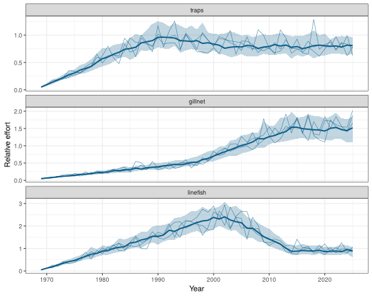
Shared effort. Fishing mortality of species
s by fleet f is
relq[s, f] × Fmsy[s] × efficiency[f, y] × effort[f, y].
Effort noise is common to all species of a fleet; effort creep raises
efficiency but is not visible in the effort index.
Your own fishery is defined with fishery() and
effort_trend(); for example, two fleets with 1% annual
effort creep in the second:
my_fy <- fishery(
fleets = c("handline", "net"), years = 1980:2025,
trends = list(handline = effort_trend(fhi = 1.5, flo = 1, breaks = c(0.5, 0.8)),
net = effort_trend(fhi = 0.8, flo = 1.2, breaks = c(0.3, 0.6))),
sigmaE = 0.15, creep = c(handline = 0, net = 0.01))
write_spec(my_fy, "my_fishery.yaml")2 Species
FLOSS ships the four reef species as read-only examples. Each holds life-history parameters (FishLife), a target MSY, selectivity by fleet and relative catchability by fleet.
species_library()[, c("id", "common_name", "msy", "source")]
#> id common_name msy source
#> 1 carcharhinus_melanopterus Blacktip reef shark 75 example
#> 2 lethrinus_mahsena Mahsena emperor 1000 example
#> 3 lutjanus_bohar Two-spot red snapper 600 example
#> 4 siganus_sutor Whitespotted rabbitfish 750 example
sp <- load_species("lutjanus_bohar")
sp
#> FLOSS species: Lutjanus bohar (Two-spot red snapper)
#> MSY = 600 productivity: Low-intermediate
#> life history: linf=71.4, k=0.212, t0=-1, a=0.01, b=3.04, lm=34.5, tm=3.07, tmax=16, M=0.325, s=0.68, sigR=0.437, rho=0.597
#> fleet selectivity relq
#> traps dnormal(Lpeak=27, sd_left=10, sd_right=13.5) 0.1
#> gillnet normal(Lpeak=37, sd=11.1) 0.5
#> linefish logistic(L50=40, L95=55) 1.0
FLRef::plot_sel_la(species_sel(sp), age_by = 2, len_by = 10)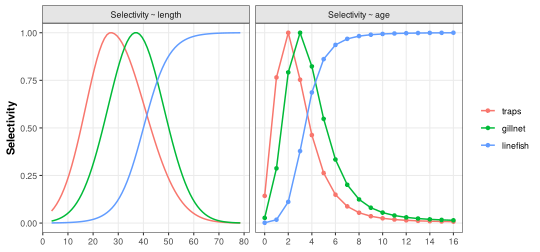
A new species is easiest made from a copy. Here a hypothetical humpback snapper borrows the selectivity of L. bohar:
gibbus <- species(
"Lutjanus gibbus", common_name = "Humpback red snapper",
lh = modifyList(sp$lh, list(linf = 45, k = 0.3, lm = 25, tm = 2.5, tmax = 18,
M = 0.35)),
msy = 400, sel = sp$sel, relq = c(traps = 0.4, gillnet = 0.6, linefish = 0.8))
save_species(gibbus)
species_library()[, c("id", "msy", "source")]
#> id msy source
#> 1 carcharhinus_melanopterus 75 example
#> 2 lethrinus_mahsena 1000 example
#> 3 lutjanus_bohar 600 example
#> 4 siganus_sutor 750 example
#> 5 lutjanus_gibbus 400 userThe rest of the guide uses the four example species.
3 Operating models
build_oms() calibrates each species to its MSY, applies
fleet F (effort × relative catchability × Fmsy × selectivity) and
projects the stock with stochastic recruitment. Use 100 or more
iterations in practice; 20 keeps this guide quick.
ids <- c("siganus_sutor", "lethrinus_mahsena", "lutjanus_bohar",
"carcharhinus_melanopterus")
oms <- build_oms(ids, fy, nsim = 20)
oms$lutjanus_bohar
#> FLOSS operating model: Lutjanus bohar
#> fishery: reef_3fleets ( traps, gillnet, linefish )
#> years: 1971 - 2025 iterations: 20
#> refpts: Fmsy=0.186, Bmsy=2050, Bthr=1020, Blim=511, MSY=586, B0=6920
#> final year (median): B/Bmsy = 0.824 F/Fmsy = 1.11
plot_om(oms)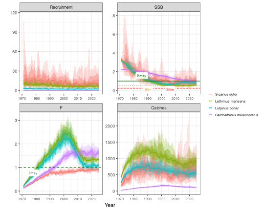
plot_fleets(oms$lutjanus_bohar)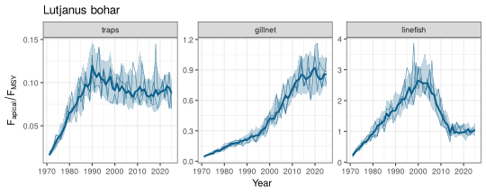
4 Sampling settings
oem_settings() holds every observation setting;
reef_oem() gives the settings of this example: CPUE, length
frequencies and biological samples for the most recent 5 years
(traps), 10 years (gillnet) and 15 years (linefish), catch and
effort for all years, and a January survey for the last 25 years.
oem <- reef_oem()
oem
#> FLOSS sampling settings
#> fleet years catch_cv bias effort_cv cpue_cv cpue_rho ess_age ess_len
#> traps 2021-2025 0.1 0 0.1 0.2 0.3 30 300
#> gillnet 2016-2025 0.1 0 0.1 0.2 0.3 30 300
#> linefish 2011-2025 0.1 0 0.1 0.2 0.6 50 500
#> bio_n
#> 100
#> 100
#> 200
#> survey: 2001-2025 timing 0 cv 0.25 rho 0 + length samples
#> seasons traps : 4 (0.25/0.25/0.25/0.25)
#> seasons gillnet : 4 (0.25/0.25/0.25/0.25)
#> seasons linefish : 4 (0.25/0.25/0.25/0.25)Why sampling settings matter. The same stock looks different through different sampling: few clusters make length samples erratic, autocorrelated CPUE errors make trends look more certain than they are, and the years sampled decide whether a change in the stock is visible at all.
Three choices matter most:
-
CPUE residual autocorrelation
(
cpue_rho). A fleet that keeps fishing the same grounds does not sample the stock at random, so its CPUE errors persist from year to year: . The linefish fleet uses . -
Two-stage length sampling
(
lfd_ess_age,lfd_ess_len), the FLRef protocol ofFLRef::lfd.sim(): clusters (trips, hauls) are drawn from the fleet’s catch-at-age, then fish are measured through the gear’s length key. The effective sample size lies between the two. -
Ageing scheme of the biological samples
(
bio_age_scheme): a random share of fish ("random",bio_p_aged) or a length-stratified subsample of at mostbio_n_per_binotoliths per length bin ("stratified").
Any setting can be changed, by fleet where it makes sense:
5 Generate the data
sample_data() samples every data stream for the chosen
iterations. Each iteration becomes one dataset (e.g. one per group of
trainees).
dat <- sample_data(oms, oem, iters = 1:3, seed = 2026)
dat
#> FLOSS data: 4 species, 3 fleets, 3 iterations
#> catch effort cpue survey lfd bio
#> 1980 495 360 300 36599 54000The result is a list of plain data frames:
head(dat$catch, 3)
#> species iter year fleet catch_t catch_true
#> 1 Siganus sutor 1 1971 traps 120.92896 125.79605
#> 2 Siganus sutor 1 1972 traps 97.68456 96.34536
#> 3 Siganus sutor 1 1973 traps 185.89068 181.94553
head(dat$cpue, 3)
#> species iter year source index index_true
#> 1 Siganus sutor 1 2021 traps 0.9441645 0.7574380
#> 2 Siganus sutor 1 2022 traps 1.0203150 0.9794776
#> 3 Siganus sutor 1 2023 traps 1.2210618 1.2232947
head(dat$lfd, 3)
#> species iter year season source len_mm n
#> 1 Siganus sutor 1 2021 1 traps 170 2
#> 2 Siganus sutor 1 2021 1 traps 180 4
#> 3 Siganus sutor 1 2021 1 traps 190 10
head(dat$bio, 3)
#> species iter year season source fish_id len_mm age wt_g mature
#> 1 Siganus sutor 1 2021 1 traps 1 289 NA 269.8 1
#> 2 Siganus sutor 1 2021 1 traps 2 266 NA 172.3 1
#> 3 Siganus sutor 1 2021 1 traps 3 348 NA 552.2 1
#> age_true
#> 1 1
#> 2 2
#> 3 16 Look at the observations
All plots show observations only; nothing is fitted.
Catch, CPUE and survey
plot_obs(dat, "Lutjanus bohar", what = "catch")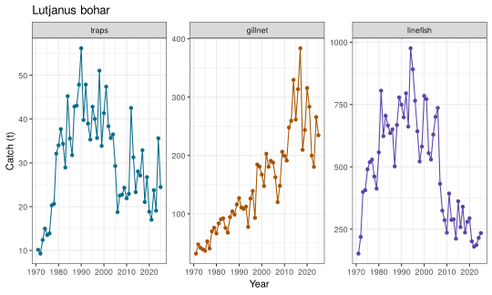
With truth = TRUE (trainer view) the true index is added
as a dashed line:
plot_obs(dat, "Lutjanus bohar", what = "index", truth = TRUE)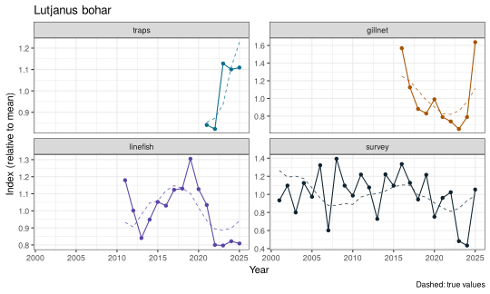
Several datasets can be compared by passing more than one iteration:
plot_obs(dat, "Lutjanus bohar", iter = 1:3)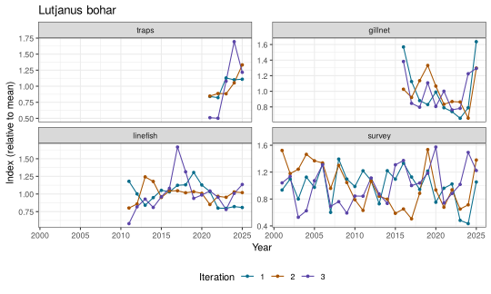
Length frequencies
The classic view: one length-frequency histogram per year and source. The dotted lines mark the mean length of each age class in mid-year, so modes can be matched to year classes.
plot_lfd(dat, "Lutjanus bohar", type = "bars", source = c("gillnet", "linefish", "survey"),
years = 2018:2025, cohorts = TRUE)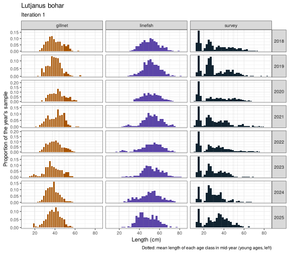
The ridge view shows each year’s length distribution along the time axis with von Bertalanffy cohort lines: real modes move along them.
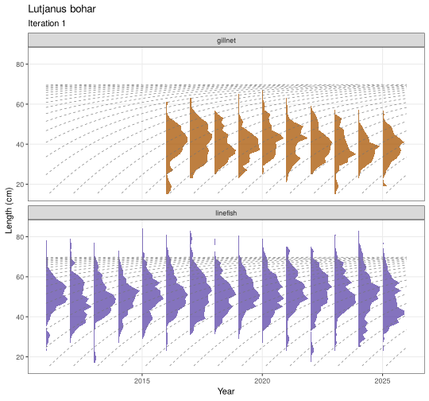
The bubble view shows all years at once. A strong year class appears as a ridge of large bubbles moving to the right along the growth lines.
plot_lfd(dat, "Lutjanus bohar", type = "bubble", cohorts = TRUE)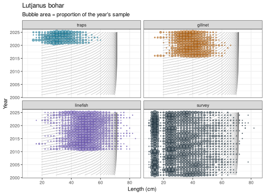
Seasonal sampling. The samples of each year are
spread over four seasons (the default, season_design()).
Fish grow through the year, so later seasons have larger fish.
plot_seasons() shows the sample sizes and the mean length
by season; plot_lfd(season = 1) shows one season only.
plot_seasons(dat, "Lutjanus bohar")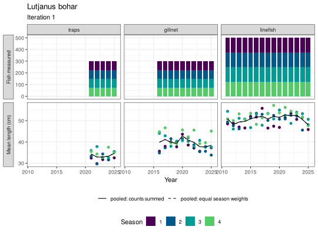
With by_season = TRUE the length samples of each season
are shown separately; here an imbalanced design where sampling shifts to
the second half of the year from 2020 (set in
oem_settings(seasons = season_design(...)), or in the app
under Sampling, Seasons):
oem_shift <- reef_oem(seasons = season_design(share = c(0.6, 0.3, 0.05, 0.05),
shift = list(from = 2020, share = c(0.05, 0.05, 0.3, 0.6))))
dat_shift <- sample_data(oms[["lutjanus_bohar"]], oem_shift, iters = 1)
plot_lfd(dat_shift, "Lutjanus bohar", type = "ridge", source = "linefish",
years = 2016:2025, cohorts = TRUE, by_season = TRUE)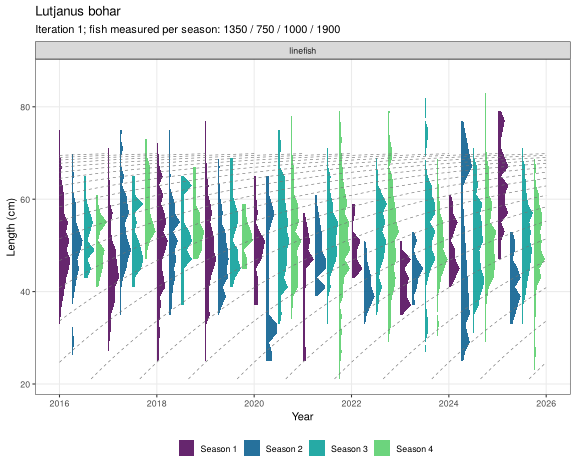
plot_lfd(dat_shift, "Lutjanus bohar", type = "bars", source = "linefish",
years = 2018:2021, by_season = TRUE)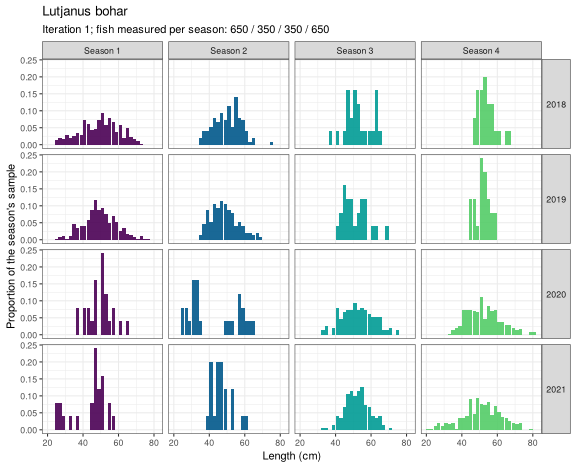
Biological samples
plot_bio(dat, "Lutjanus bohar", what = "age_length")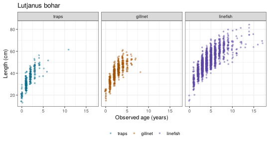
plot_bio(dat, "Lutjanus bohar", what = "length_weight")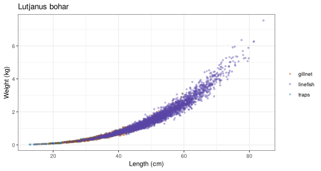
plot_bio(dat, "Lutjanus bohar", what = "maturity")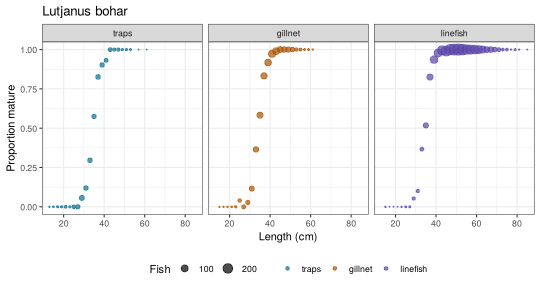
Age-length key and catch-at-age
The observed age-length key counts aged fish by length bin and age:
alk <- alk_obs(dat, "Lutjanus bohar", source = "linefish")
alk[1:8, 1:8]
#> age
#> len_mm 0 1 2 3 4 5 6 7
#> 140 2 0 0 0 0 0 0 0
#> 160 0 0 0 0 0 0 0 0
#> 180 1 0 0 0 0 0 0 0
#> 200 0 1 0 0 0 0 0 0
#> 220 0 0 0 0 0 0 0 0
#> 240 0 4 0 0 0 0 0 0
#> 260 0 2 0 0 0 0 0 0
#> 280 0 12 0 0 0 0 0 0
plot_bio(dat, "Lutjanus bohar", what = "alk", source = "linefish")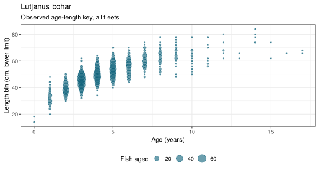
Applying the key to the length samples gives catch-at-age. Length
bins without aged fish cannot be assigned and are reported as
unassigned. With raise = "catch" the numbers are raised to
the observed catch weight.
caa <- caa_obs(dat, "Lutjanus bohar", source = "linefish", raise = "catch")
round(attr(caa, "unassigned"), 3)
#> 2011 2012 2013 2014 2015 2016 2017 2018 2019 2020 2021 2022 2023
#> 0.004 0.000 0.008 0.000 0.000 0.002 0.002 0.000 0.000 0.000 0.002 0.018 0.002
#> 2024 2025
#> 0.002 0.004
plot_caa(caa)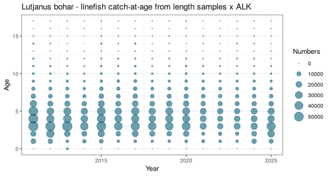
Before trusting a single indicator, check that
cohorts move through the length data at the growth rate and that the
indices broadly agree. plot_indicators() puts all series on
one page.
plot_indicators(dat, "Lutjanus bohar")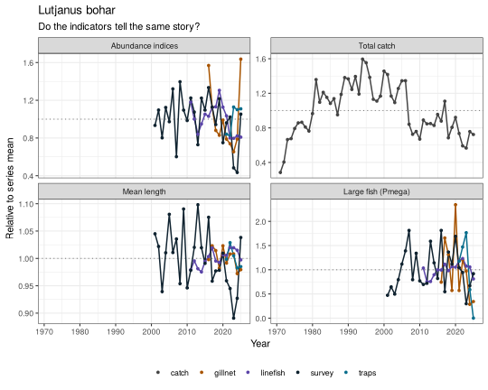
7 True status (trainers)
The answer key summarised: B/Bmsy, F/Fmsy and catch/MSY in the last year and the Kobe status, for each species and dataset, or as medians over datasets.
status_table(dat)
#> species iter year B_Bmsy F_Fmsy C_MSY
#> 1 Carcharhinus melanopterus 1 2025 0.9337977 1.4802088 1.4412577
#> 2 Carcharhinus melanopterus 2 2025 0.8037412 1.6882793 1.4498557
#> 3 Carcharhinus melanopterus 3 2025 0.9074381 1.8885016 1.6906540
#> 4 Lethrinus mahsena 1 2025 0.5635127 1.2884067 0.7423677
#> 5 Lethrinus mahsena 2 2025 0.8474511 1.4051087 1.1723553
#> 6 Lethrinus mahsena 3 2025 0.5162341 1.4453839 0.6548391
#> 7 Lutjanus bohar 1 2025 0.7114196 1.0691277 0.8378903
#> 8 Lutjanus bohar 2 2025 0.5252322 1.1442246 0.6631025
#> 9 Lutjanus bohar 3 2025 1.1754089 1.1656858 1.6664877
#> 10 Siganus sutor 1 2025 1.2912853 0.7572616 0.8031149
#> 11 Siganus sutor 2 2025 1.1454371 0.9123727 0.5540110
#> 12 Siganus sutor 3 2025 0.7347978 0.9590079 0.6014996
#> status
#> 1 Overfished and overfishing
#> 2 Overfished and overfishing
#> 3 Overfished and overfishing
#> 4 Overfished and overfishing
#> 5 Overfished and overfishing
#> 6 Overfished and overfishing
#> 7 Overfished and overfishing
#> 8 Overfished and overfishing
#> 9 Overfishing
#> 10 Healthy
#> 11 Healthy
#> 12 Overfished
status_table(dat, summary = TRUE)
#> species year B_Bmsy F_Fmsy C_MSY
#> 1 Carcharhinus melanopterus 2025 0.9074381 1.6882793 1.4498557
#> 2 Lethrinus mahsena 2025 0.5635127 1.4051087 0.7423677
#> 3 Lutjanus bohar 2025 0.7114196 1.1442246 0.8378903
#> 4 Siganus sutor 2025 1.1454371 0.9123727 0.6014996
#> status p_healthy
#> 1 Overfished and overfishing 0.0000000
#> 2 Overfished and overfishing 0.0000000
#> 3 Overfished and overfishing 0.0000000
#> 4 Healthy 0.6666667
plot_truth(dat)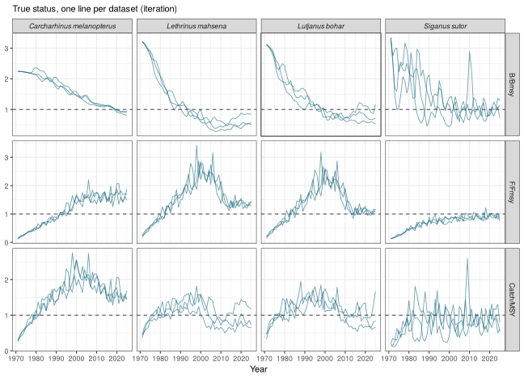
plot_kobe(dat)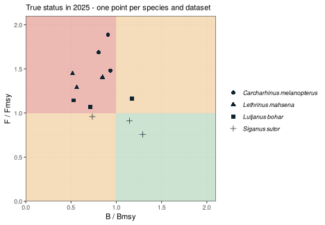
The true time series, reference points and status table can be saved on their own, e.g. for a trainer’s slides:
tdir <- export_truth(dat, file.path(tempdir(), "reef_truth"), format = "csv")
list.files(tdir)
#> [1] "refpts.csv" "status.csv" "truth_timeseries.csv"Naive aggregation (teaching)
An analyst often has catch and effort for the whole fishery, not by fleet, and sometimes for all species together. FLOSS reports effort in fishing days, so catch, effort and nominal CPUE (kg per fishing day) can be shown by fleet, summed over fleets, or summed over fleets and species.
plot_aggregate(dat, "Lutjanus bohar", what = "cpue", by = "fleet", truth = TRUE)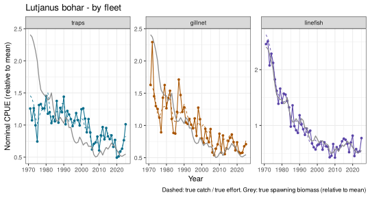
plot_aggregate(dat, "Lutjanus bohar", what = "cpue", by = "aggregate", truth = TRUE)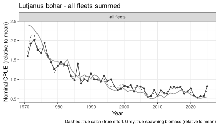
plot_aggregate(dat, what = "cpue", by = "combined")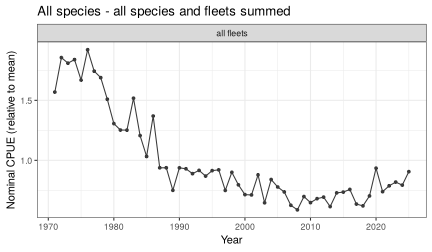
Warning flag. Nominal CPUE summed over fleets changes whenever the fleet mix changes (here linefish effort rises and falls), even if the stock does not; summed over species, the decline of one species can hide behind the others. Compare with the fleet-level series and, as a trainer, the true spawning biomass (grey).
The tables behind these plots are catch_table(),
effort_table() and nominal_cpue().
Length samples can be pooled over fleets as measured, or raised to each fleet’s catch first (numbers = sample numbers x catch / sample weight):
pooled <- lfd_aggregate(dat, "Lutjanus bohar", by = "aggregate", raise = "sample")
raised <- lfd_aggregate(dat, "Lutjanus bohar", by = "aggregate", raise = "catch")
mean_len <- function(l) tapply(l$len_mm * l$n, l$year, sum) / tapply(l$n, l$year, sum) / 10
round(rbind(pooled = mean_len(pooled[pooled$iter == 1, ]),
raised = mean_len(raised[raised$iter == 1, ])), 1)
#> 2011 2012 2013 2014 2015 2016 2017 2018 2019 2020 2021 2022 2023 2024
#> pooled 49.8 47.1 48.4 48.6 49.9 46.2 46.9 45.7 46.2 47.3 43.4 42.6 42.1 41.3
#> raised 49.8 47.1 48.4 48.6 49.9 42.2 43.5 42.7 42.5 44.9 42.1 41.1 40.0 38.8
#> 2025
#> pooled 40.7
#> raised 40.0
plot_lfd(dat, "Lutjanus bohar", type = "bars", lfd = raised, years = 2020:2025)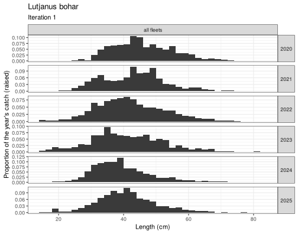
Pooled as measured, each fleet counts by its sample size; raised, by
its catch. Biological samples can be shown with a panel per fleet, all
fleets in one panel, or a panel per season (points coloured by fleet
throughout). Length at age rises through the year; as a trainer,
truth = TRUE adds the true growth curve at the middle of
each season:
plot_bio(dat, "Lutjanus bohar", what = "age_length", by = "season", truth = TRUE)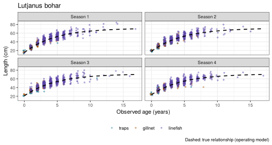
8 Save the datasets
export_data() writes one folder per iteration and the
answer key in its own folder; give = "data" leaves out the
life-history parameters, format = c("csv", "xlsx") adds one
Excel workbook per iteration, and zip = TRUE writes a zip
file to hand out.
out <- export_data(dat, file.path(tempdir(), "reef_course"), give = "data_lh",
format = "csv", answer_key = TRUE)
list.files(out, recursive = TRUE)
#> [1] "answer_key/bio_true_age.csv" "answer_key/catch_true.csv"
#> [3] "answer_key/planted_artefacts.csv" "answer_key/README_answer_key.txt"
#> [5] "answer_key/refpts.csv" "answer_key/status.csv"
#> [7] "answer_key/truth.csv" "iter_01/bio.csv"
#> [9] "iter_01/catch.csv" "iter_01/cpue.csv"
#> [11] "iter_01/effort.csv" "iter_01/lfd.csv"
#> [13] "iter_01/lhpars.csv" "iter_01/survey.csv"
#> [15] "iter_02/bio.csv" "iter_02/catch.csv"
#> [17] "iter_02/cpue.csv" "iter_02/effort.csv"
#> [19] "iter_02/lfd.csv" "iter_02/lhpars.csv"
#> [21] "iter_02/survey.csv" "iter_03/bio.csv"
#> [23] "iter_03/catch.csv" "iter_03/cpue.csv"
#> [25] "iter_03/effort.csv" "iter_03/lfd.csv"
#> [27] "iter_03/lhpars.csv" "iter_03/survey.csv"
#> [29] "README.txt" "settings.yaml"cat(readLines(file.path(out, "README.txt")), sep = "\n")
FLOSS simulated fishery data
Created with FLOSS 0.5.8 on 2026-11-04
Species: Siganus sutor, Lethrinus mahsena, Lutjanus bohar, Carcharhinus melanopterus
Fleets: traps, gillnet, linefish
Years: 1971-2025
Datasets (iterations): 1, 2, 3
Files in each iter_xx folder:
catch.csv observed catch by fleet (t)
effort.csv nominal effort by fleet (fishing days)
cpue.csv CPUE by fleet, scaled to mean 1 over the years sampled
survey.csv survey biomass index, scaled to mean 1
lfd.csv length samples: number of fish per length bin and season (len_mm = lower limit, mm)
bio.csv one row per fish: season, len_mm, age (NA = not aged), wt_g, mature (0/1)
lhpars.csv life-history parameters (cm, g, years)
(optional) catch_aggregate, effort_aggregate, cpue_nominal, lfd_aggregate:
catch and effort by fleet / all fleets / all species, nominal CPUE
(kg per fishing day), length samples pooled and raised to the catch
(optional) floss_flr.rds FLR objects by species for JABBA3 and FLicc (as_flr())
Sampling years by fleet:
traps: 2021-2025
gillnet: 2016-2025
linefish: 2011-2025
answer_key/ holds the true stock dynamics and reference points.
Remove it before giving the data to trainees.Trainees (or you) can read a dataset back and use the same plots:
d1 <- read_dataset(file.path(out, "iter_01"))
names(d1)
#> [1] "bio" "catch" "cpue" "effort" "lfd" "lhpars" "survey"
plot_bio(d1, "Siganus sutor", what = "age_length")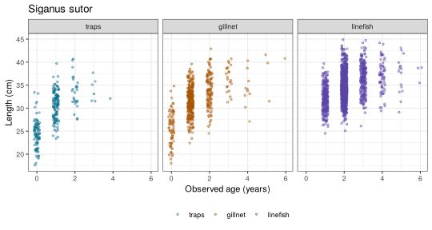
settings.yaml holds the fishery, species and sampling
settings and the seed, so the datasets can be re-created exactly.
aggregate = TRUE adds the aggregated tables (catch and
effort summed over fleets and species, nominal CPUE, pooled and raised
length samples).
FLR objects for JABBA3 and FLicc
format = "rds" writes, per iteration,
floss_flr.rds: one as_flr() object per species
with FLQuants of catch, effort and length frequencies, FLIndices (with
log-scale SEs in index.var) and the life-history FLPar.
f <- as_flr(dat, "Lutjanus bohar", iter = 1)
f
#> FLOSS data as FLR objects: Lutjanus bohar - iteration 1
#> catch (FLQuants, t): traps, gillnet, linefish
#> indices (FLIndices): traps, gillnet, linefish, survey
#> effort (FLQuants, days): traps, gillnet, linefish
#> lfd (FLQuants, len x year): traps, gillnet, linefish, survey
#> lhpar: linf, k, t0, M, L50, a, b, tmax, s
#> JABBA3: jb3_data(x$catch, x$indices, auxiliary = x$effort)
#> FLicc: stocklen(x$lfd, x$lhpar); catch_by_gear = x$catch_by_gear
# production model (JABBA3): catch by fleet, all indices, effort as auxiliary data
jb <- JABBA3::jb3_data(f$catch, f$indices, stock = "bohar", auxiliary = f$effort)
# length-based (FLicc): length frequencies by gear and life history
stk <- FLicc::stocklen(f$lfd[c("gillnet", "linefish")], f$lhpar)
fit <- FLicc::fiticc(f$lfd[c("gillnet", "linefish")], stk,
catch_by_gear = f$catch_by_gear[c("gillnet", "linefish")] /
sum(f$catch_by_gear[c("gillnet", "linefish")]))9 Treatments: one change, same random numbers
A treatment changes one thing in the stock from a given year (effort,
recruitment, selectivity, creep, M). run_treatment() runs
it against the baseline with the same random numbers; see
vignette("floss-03-teaching") for the teaching cards.
tr <- run_treatment("lutjanus_bohar", fy,
treatment("halve linefish effort from 2010",
effort = list(fleet = "linefish", from = 2010, mult = 0.5)),
nsim = 10)
plot_treatment(tr)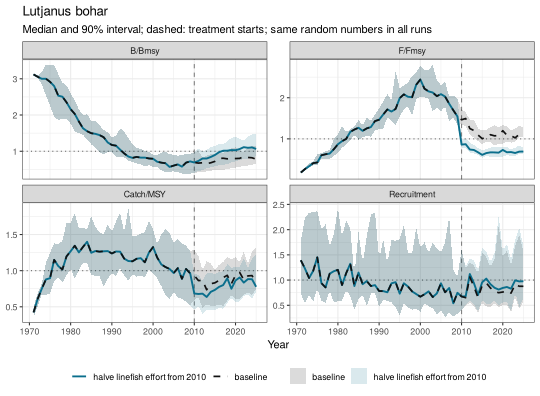
10 Everything in one call
simulate_fishery() builds the operating models and
samples the data in one step:
sim <- simulate_fishery(ids, fishery = load_fishery(), oem = reef_oem(),
nsim = 100, iters = 1:10)
export_data(sim$data, "reef_course", format = c("csv", "xlsx"), zip = TRUE)11 A teaching scenario: effort creep
With 3% annual efficiency increase in the linefish fleet, nominal effort is unchanged but fishing mortality rises. Linefish CPUE, which carries the creep, stays high while the stock declines (hyperstability):
fy_creep <- reef_fishery(creep = c(traps = 0, gillnet = 0, linefish = 0.03))
om_creep <- build_om(load_species("lutjanus_bohar"), fy_creep, nsim = 20)
dat_creep <- sample_data(om_creep, reef_oem(fishery = fy_creep), iters = 1)
plot_obs(dat_creep, what = "index", truth = TRUE)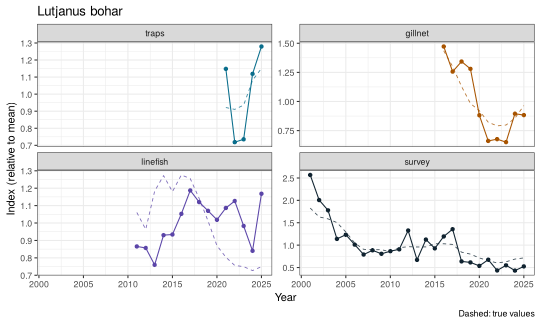
Compare oms$lutjanus_bohar and om_creep
with plot_om(): the stock is more depleted, but the
linefish CPUE barely shows it.